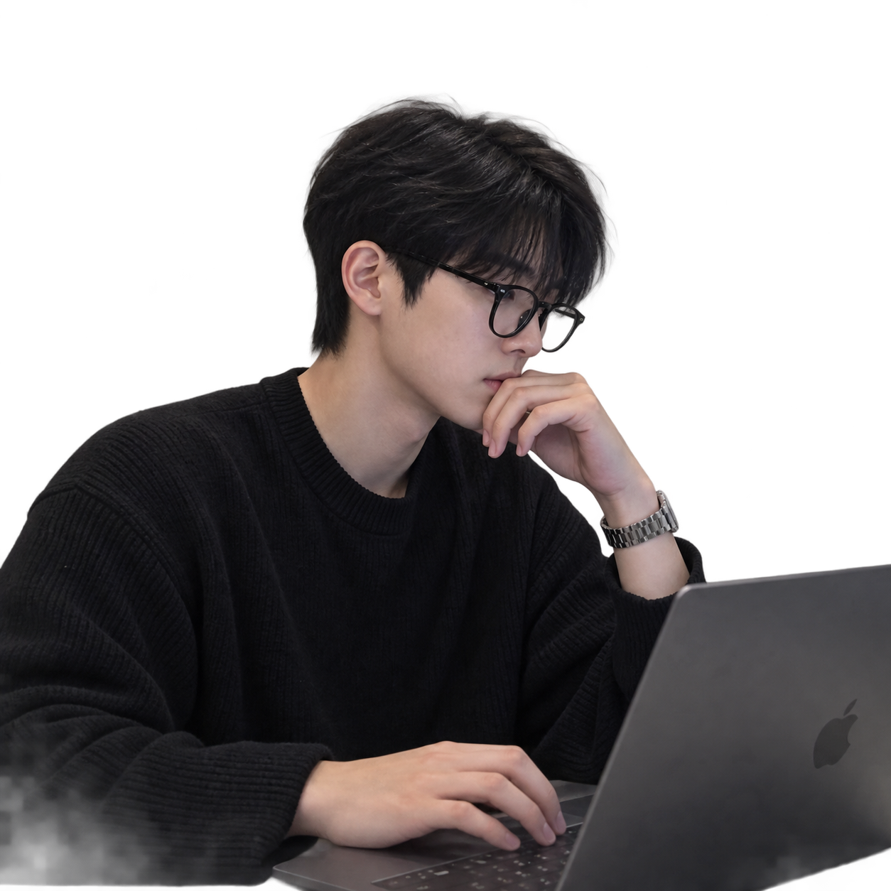

웹퍼블리싱과 디자인을 공부하며, 정적인 화면에 여백과 리듬을 살려 표현하는 작업을 좋아합니다.
럭셔리 브랜드 특유의 절제됨과 깔끔한 무드, 그리고 인터랙션을 웹으로 옮기는 데 특히 자신 있습니다.
럭셔리 자동차 브랜드 웹사이트, 클래식 자동차인 VERMEILLE, 스포츠카 컨셉의 NOIR DE NOIR 등 서로 결이 다른 두 자동차의 양면성을 살리어 페이지로 풀어냈습니다.
모나코 몬테카를로의 호텔을 소재로 한 팀 프로젝트로, ScrollScrub과 MapLibre를 활용, 단순히 페이지가 아니라 사용자 경험을 최대한 살릴 수 있는, 페이지 자체를 호텔처럼 제작했습니다.
음식, OTT, 착장, 장소까지 한 페이지 내에서 사용자의 니즈에 맞춘 다양한 추천 컨텐츠를 제공하는 토탈 라이프스타일 페이지입니다.
넷플릭스 오리지널 시리즈 <레이디 두아> 속 가상의 럭셔리 브랜드 '부두아(BOU DOIR)'를 실제 웹사이트로 구현한 개인 프로젝트. 브랜드가 지닌 절제된 무드를 재해석하여 웹 레이아웃으로 옮기는 데 집중했습니다.